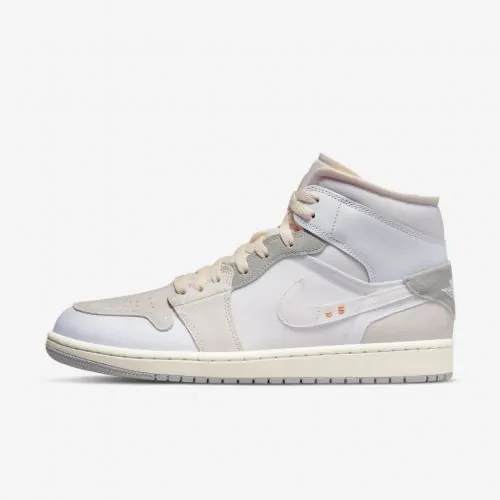
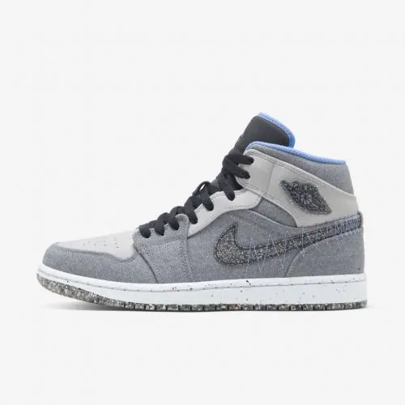

Go.Jordan
CONTATOS
Previous
Next
O que Gostaria de usar Hoje?
Nome do produtos
O tênis Air Jordan 1 Mid é inspirado no primeiro modelo AJ1, oferecendo aos fãs dos Jordan retrôs a oportunidade de seguir os passos da grandeza. A cor nova dá acabamento aos materiais limpos e clássicos, adicionando uma novidade nodesign familiar.
1.000,00

Nome do produtos
Sempre fresco e pronto para jogar, o AJ1 é um dos tênis mais icônicos de todos os tempos. Esta versão usa tons naturais e detalhes de suede para uma renovação marcante para uma lenda.
1.000,00

Nome do produtos
Decole com o logotipo Jumpman com o Air Jordan 1 Mid SE, feito com pelo menos 20% de materiais reciclados por peso. Estes tênis de edição especial foram inspirados em vestuário de trabalho robusto.
1.000,00
Nome do produtos
Sempre renovado e nunca fora de moda, o Air Jordan 1 Low SE é um dos sneakers mais icônicos de todos os tempos. Ele busca inspiração nas paisagens naturais com tons terrosos e detalhes em lona para uma atualização sólida de uma lenda em ascensão.
1.000,00
Sempre novo e nunca fora de moda, o Air Jordan 1 Low SE é um dos sneakers mais icônicos de todos os tempos. Ele busca inspiração nas paisagens naturais com tons terrosos e detalhes em lona para renovar uma lenda dos ares.
1.000,00
Nome do produtos
Um dos sneakers mais icônicos da história ganha um novo brilho para celebrar os 75 anos da NBA. Uma borda de diamante na etiqueta da língua homenageia as bodas de diamante da NBA para atualizar um dos grandes favoritos.
1.000,00
Nome do produtos
Faça seu estilo decolar com o Air Jordan 1 Mid, o sneaker das infinitas possibilidades. Essa nova edição especial do famoso tênis de cano médio oferece conforto ininterrupto para quem não se cansa do clássico de herança.
1.000,00
Nome do produtos
Com denim e suede lavados, este Air Jordan 1 Mid SE clássico se torna imbatível. Os materiais são inspirados no look e na textura da roupa social.
1.000,00
<<<<<<< HEAD ======= >>>>>>> cf1d3913eb734ba0cd8505af2ccdb5d57f3cd529